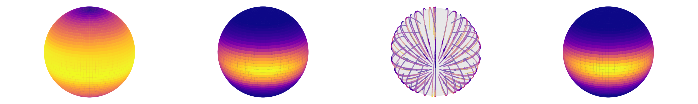

01
Geometry by construction
Transport follows the intrinsic structure of the manifold, from spheres to products of curved spaces.
GEOMETRIC DEEP LEARNING / ICML 2026
Learning the geometry
of probability.
Continuous neural transport maps for a world
that doesn’t fit in a flat space.
Directions live on a sphere. Angles wrap around a torus. Real data often follows the geometry of a curved space.
Riemannian Neural Optimal Transport learns how to move a simple distribution into a complex one, directly on the manifold. A continuous neural potential defines the transport, with the geometry built in.
See how it worksComputational optimal transport (OT) offers a principled framework for generative modeling. Neural OT methods, which use neural networks to learn an OT map (or potential) from data in an amortized way, can be evaluated out of sample after training, but existing approaches are tailored to Euclidean geometry. Extending neural OT to high-dimensional Riemannian manifolds remains an open challenge. In this paper, we prove that any method for OT on manifolds that produces discrete approximations of transport maps necessarily suffers from the curse of dimensionality: achieving a fixed accuracy requires a number of parameters that grows exponentially with the manifold dimension. Motivated by this limitation, we introduce Riemannian Neural OT (RNOT) maps, which are continuous neural-network parameterizations of OT maps on manifolds that avoid discretization and incorporate geometric structure by construction. Under mild regularity assumptions, we prove that RNOT maps approximate Riemannian OT maps with sub-exponential complexity in the dimension. Experiments on synthetic and real datasets demonstrate improved scalability and competitive performance relative to discretization-based baselines.
Transport follows the intrinsic structure of the manifold, from spheres to products of curved spaces.
A learned potential represents transport continuously and can be evaluated at new points after training.
The paper establishes approximation guarantees under regularity assumptions, motivating a scalable alternative to discrete maps.
Move the slider. Follow the particles.
Every point stays on its manifold.
↳ An interactive illustration of transport on a manifold. The particle paths are schematic; experiment outputs from the paper are shown below.
A neural network parameterizes a scalar potential. For each source point, an optimization problem on the manifold turns that potential into a transport map.
The full formulationSample a point on the manifold.
Train with the transport objective.
Move new samples to the target.
From synthetic distributions to continental drift.
Explore the paper’s original visual results.

Reference and learned distributions on the sphere, reproduced directly from the paper’s original figure.
The theory, experiments, and implementation.
Everything you need for a closer look.
@article{micheli2026riemannian,
title = {Riemannian Neural Optimal Transport},
author = {Micheli, Alessandro and Cao, Yueqi and
Monod, Anthea and Bhatt, Samir},
journal = {arXiv preprint arXiv:2602.03566},
year = {2026},
doi = {10.48550/arXiv.2602.03566}
}